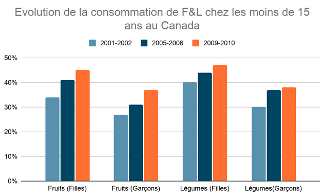
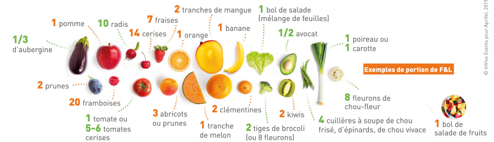
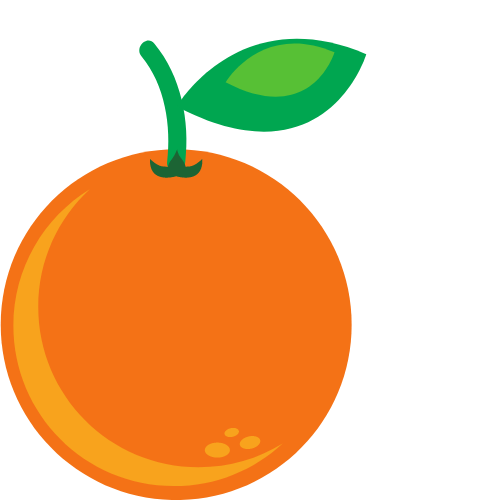

On évoque souvent le terme de “bonne” alimentation dans le but de définir cette alimentation “bonne” pour notre corps, on parle donc d’alimentation saine pour le corps humain. Une alimentation saine serait l’alimentation à adopter pour être en bonne santé. Une alimentation saine selon l’OMS, se définit comme “diversifiée, constituée de fruits et légumes, légumineuses céréales complètes et noix et incluant peu de composants présentant un risque pour la santé (tels que sucres simples, sel et matières grasses).” En adoptant cette alimentation très diverse, elle serait clé d’une bonne santé. Cette alimentation composée de légumes et de fruits est recommandée mondialement.
En effet, cette alimentation est très recommandée car elle provoque des effets bénéfiques sur notre corps. Elle se compose de 400 grammes de fruits et légumes ce qui correspond à manger 5 portions par jour. Une consommation de fruits et légumes réduit les chances de développer des maladies cardiovasculaires. De plus, consommer en grande quantité des fruits et des légumes très jeunes, est essentiel pour ne pas être touchés par les maladies non transmissibles.
Ces cartes montrent le pourcentage de jeunes de moins de 15 ans qui consomment au moins une portion de fruit par jour. Le premier constat que démontrent ces cartes, c'est que la consommation de fruits est plus importante pour les filles que pour les garçons. Par exemple, pendant la période 2001-2002, au Canada, 34% des jeunes filles canadiennes consomment au moins 1 fruit par jour, contre 26.80% des garçons canadiens.
Ces deux cartes suivantes montrent à l’inverse le pourcentage de jeunes de moins de 15 ans qui consomment au moins une portion de légume par jour. Le premier constat fait pour les cartes précédentes est le même pour ces deux cartes. Les deux pourcentages les plus élevés sont 61% pour les filles contre 46% pour les garçons. Donc il y a plus de filles qui consomment des légumes que des garçons. Par exemple, en France, entre 2001 et 2002, 35,30% des garçons consomment une portion de légumes par jour contre 40,50% des filles.
Réalisation : LAVESQUE Alexandra
Source : OCDE
Ce graphique montre que la consommation de fruits et de légumes au Canada chez les moins de 15 ans a augmenté entre 2001 et 2010. La consommation de fruits chez les jeunes filles a augmenté de 11 points de pourcentage, mais la consommation de fruits chez les garçons a aussi augmenté de 10.2 point de pourcentage. Concernant la consommation de légumes, elle a aussi augmenté pour les filles et les garçons de moins de 15 ans. Cependant, la consommation chez les garçons a augmenté en points de pourcentage (7.9) par rapport aux filles (6.9) mais entre 2009 et 2010, presque la moitié des filles canadiennes consomment une portion de légumes par jour contre 38% des garçons canadiens.
Pour être en bonne santé, il faut donc apporter au corps humain une part importante de fruits et légumes.
Cependant cette carte montre que dans les pays de l’Union européenne, la consommation de fruits et légumes est très hétérogène. Environ ⅓ des français ne mangent pas de fruits et légumes, ils consomment 0 portions sur les 5 portions qui sont recommandés par l’OMS.
Sur cette deuxième carte, les pays verts sont ceux dont la moitié ou plus de la population consomment entre 1 et 4 portions de fruits et de légumes par jour. Sur les 31 pays représentés sur cette carte, 15 pays ont plus de 50% de leur population consomment entre 1 et 4 portions de fruits et légumes par jour.
Cette carte montre la consommation de plus de 5 portions par jour, cette tendance est très localisée dans les pays comme les Pays-Bas, l’Irlande, le Royaume-Uni. Cependant sur la carte précédente pour la consommation de 1 à 4 portions, ces pays se trouvent en rouge. Par exemple, en 2014, en Irlande, 37.80% de la population consomment une portion à 4 portion par jour, contre 28.80% de la population consomment 5 portions ou plus.
Concernant la consommation de fruits et légumes au niveau mondial, les cartes ci-dessus montrent la consommation quotidienne par habitant. Les pays en rouge ont une consommation moyenne par habitant inférieure à 200 grammes par personne et par jour de fruits ou de légumes. Selon les recommandations, il faut consommer environ 400 grammes de fruits et de légumes par jour. Et donc les pays en vert ont une consommation moyenne supérieure à 200 grammes par jour de fruits et légumes. Au fil des années avec la montée de la tendance a favorisé une alimentation à base de fruits et de légumes, cela se représente sur les cartes avec une augmentation des pays en vert cela signifie que la population consomme au moins 200 grammes de fruits ou de légumes par jour.
La répartition sur les cartes des pays en vert et en rouge reste très hétérogène comme au niveau de l’Union Européenne. En ce qui concerne la consommation de fruits par jour, si on regarde à une année fixe (2017), la carte se coupe en deux. À l'Ouest, les pays sont quasiment tous en vert donc il consomme plus de 200 grammes par jour. Et à l’Est, les pays consomment moins de 200 grammes de fruits donc ils sont quasiment tous en rouge. Au sujet de la carte de la consommation de légumes, elle est aussi découpée en deux parties. Au Nord, des pays majoritairement verts et au Sud-Ouest les pays sont rouges. Une autre constatation c’est que la consommation de fruits et de légumes n’est pas la même pour un pays. Ainsi, pour le Brésil en 2017, pour les légumes le pays se trouve en rouge et pour les fruits le pays est en vert.
Il faut ensuite consommer 10% de graisses saturées de notre apport énergétique total de la journée. Il faut éviter de consommer beaucoup d’acides gras saturés qui se trouvent dans le beurre, les fromages, il ne faut pas dépasser 26 grammes par jour. Pour être en bonne santé il faut remplacer les graisses saturées par des graisses insaturées. Pour éviter de consommer en grande quantité des graisses saturées ont peut remplacer le beurre par des huiles végétales comme par exemple l’huile de tournesol. Une consommation trop importante de graisses saturées qui proviennent des animaux peut provoquer des maladies cardiovasculaires.
Pour avoir une alimentation saine et donc être en bonne santé, il faut consommer de tout mais éviter de consommer des aliments trop gras. Cette composition d’une alimentation saine est différente selon les besoins des individus, cependant les bases de cette alimentation saine restent les mêmes. Tout comme les nourrissons et les enfants, cette alimentation est recommandée. Lors des deux premières années d’un enfant, son alimentation doit être composée de lait maternel pour favoriser une bonne santé et éviter des maladies à l’âge adulte. Par la suite, le lait maternel est complété remplacé par des aliments très riches en nutriments pour favoriser le développement et la croissance de l’enfant.
L’alimentation saine et l’activité physique sont les clés pour être en bonne santé. Si l’alimentation n’est pas composée en quantité nécessaire de fruits et légumes cela peut provoquer un risque important d’être en situation d’obésité ou être touchée par des maladies non transmissibles (MNT). Les maladies non transmissibles sont les maladies cardiovasculaires, les cancers, les maladies respiratoires chroniques et le diabète. Il faut noter que ces maladies sont devenues la première cause de décès dans le monde. En 2016, 71% des décès dans le monde sont dus à ces MNT. Pour éviter d’être touché par ces maladies, l’humain doit avoir une alimentation saine et donc composée de fruits et légumes. Cependant, l'Organisation Mondial de la Santé (OMS) préconise de consommer 400 grammes de fruits et légumes par jour alors qu’en France il est conseillé de consommer au moins 5 portions. Malgré ces désaccords sur la quantité de fruits et légumes à consommer, les chiffres sont très bas. Seulement 12% des européens consomment 5 fruits et légumes par jour. Environ 35% des européens de plus de 15 ans ne consomment pas de fruits et de légumes dans la journée.
Si l'OMS recommande l'utilisation d'une alimentation saine, c'est parce qu'elle a un effet bénéfique sur la santé. Bien manger et de tout permet de lutter contre toutes formes de malnutrition. Être en sous-poids est autant nocif qu’un individu en surpoids, pour sa santé. Être en bonne santé permet d’être moins touchés par les maladies non transmissibles (MNT). Cela s’explique par plusieurs facteurs: Si l’alimentation n’est pas trop riche en sucre, cela va éviter à l’individu de développer du diabète. De même, lors de la grossesse, si l’alimentation de la mère est trop sucrée cela va lui créer un diabète gestationnel mais à la naissance son enfant aura développé d’une diabète car son corps a été habitué à une alimentation sucrée. Une alimentation pas trop riche en aliments gras, va permettre une bonne fluidité du sang et donc être moins sensible aux problèmes de sang comme par exemple des caillots de sang. Une alimentation saine, c'est aussi une faible part de sel dans celle-ci. Cela va éviter de faire augmenter la tension et donc de provoquer des problèmes de cœur. Une alimentation saine basée sur les fruits et légumes permet d’apporter des vitamines majeurs pour le corps humain comme la vitamine A (rôle central au niveau des cellules), la vitamine E (permet de protéger contre les maladies du cœur et les cancers) et la vitamine C (renforce le système immunitaire).
Les bienfaits d’une bonne alimentation sont aussi à une échelle plus petite. Elle permet de préserver l’appareil de digestion de l’être humain ( intestins, colons…). Dans les intestins , il y a des bactéries amies qui participent à la digestion et à l'assimilation des nutriments. Une alimentation constituée de 5 portions de fruits et légumes par jour va contribuer à la formation de ces bactéries et donc cela va favoriser une bonne santé du côlon et donc de la santé humaine. Cela a un effet favorable direct sur la digestion. Une alimentation saine est source d’une bonne qualité de sommeil. L’obésité ou la consommation de boissons trop sucrées peuvent engendrer des problèmes de sommeil et donc aussi d’humeur.
Les personnes qualifiées de “bon mangeurs” sont très différentes des mauvais mangeurs. Pour ces personnes qui consomment beaucoup de fruits et légumes privilégient la modération alimentaire “ de tout sans excès”. Les consommateurs de fruits et légumes, avec une alimentation saine, privilégient les produits biologiques. Ils cherchent dans la qualité de leur produit, la fraîcheur et l’apparence d’un produit, qui sont essentielles dans leur mode de vie.
Avec la crise sanitaire à cheval entre les années 2019 et 2020, les agents économiques ont modifié leurs comportements. Ils ont privilégié les produits locaux et les circuits courts, favorisant l’achat de produits frais, des produits de saison. Mais aussi éviter le gaspillage et les pertes tout en cuisinant chez soi. Cela a créé de nouveaux consommateurs de produits biologiques. Ces nouveaux consommateurs sont principalement des personnes âgées de 18-24 ans, des CSP élevées et des femmes. On note en France, une augmentation de 15 % du taux national.
En France, dans le groupe des “bons mangeurs” selon le CRÉDOC, les personnes âgées, les retraités, les cadres, les habitants de la région parisienne et les personnes de poids normal sont surreprésentés. Les 65 ans et plus représentent 29% dans le groupe des “bons mangeurs”. Cela s’explique pour des raisons médicales, ils consomment beaucoup de fruits et de légumes. Selon le CRÉDOC, les personnes de 65 ans et plus, leur alimentation est très traditionnelle, ce qui explique qu’ils consomment majoritairement des fruits et des légumes car c’était la source d’alimentation dans les siècles passés.
Ce graphique montre les inégalités de consommation de fruits et de légumes entre les différents pays mais ils montrent aussi que selon le niveau de scolarité des populations la consommation de fruits et de légumes est différente.
En 2014, au Royaume-Uni, 24.90% des personnes âgées de 15 ans et dont le niveau scolarité est entre 0-2 consomment au moins cinq portions de fruits et de légumes par jour, contre 40.50% des personnes dont le niveau de scolarité entre 5-8. Cette tendance est similaire même en Italie par exemple, bien que la consommation soit plus faible. En 2014, 10.90% des personnes âgées de 15 ans et dont le niveau de scolarité est compris entre 0-2 consomment au moins 5 portions de fruits et légumes par jour, en revanche les personnes ayant un niveau scolarité compris entre 5-8 représentent 15.30%.
Les produits sont biologiques quand leur production répond aux respects des équilibres naturels tout en excluant l'usage des produits chimiques.
Le prix des produits biologiques arrive dans le top 5 des critères de choix d’achats d’un produit. Les prix des fruits et des légumes entre les agricultures conventionnelle et biologique sont très divergents. Par exemple, en France, en 2019, le prix d’un kilogramme de pomme issue d’agriculture conventionnelle coûte 2.28 euros aux consommateurs contre 4.21 euros pour un kilogramme de pomme issu d’agriculture biologique. De même pour un kilogramme de fraises. Un kilogramme de fraises issues d’une agriculture conventionnelle coûte 6,07 euros contre 12.98 euros issue d’une agriculture biologique. Ce graphique ci-dessous montre que les prix sont mis à une diminution cependant les prix des produits biologiques restent élevés.
Les agents qui consomment 1 fois par semaine des produits bio à tous les jours sont des personnes des catégories socio-professionnelles élevées dû à leur revenu plus important. Les produits biologiques sont donc plus élevés que les produits issus d’agriculture conventionnelle ce qui a des conséquences sur la consommation.Selon la chambre d’agriculture de Carcassonne, les produits biologiques sont 20 à 30% plus chers que les produits non biologiques. Mais cette différence de prix s’explique par plusieurs raisons. La première raison est la différence de temps des productions, de main -d'œuvre et d’espace dû au respect de l'environnement et des animaux. Les prix sont plus élevés pour les produits biologiques car les rendements sont moins importants car les agriculteurs n’utilisent pas de pesticides. Une autre raison qui explique le fait des différences de prix c’est les contrôles, la faible représentation des exploitations biologiques dans l’espace agricole français. Et enfin la dernière raison qui explique ces différences de prix c’est la faible participation des pouvoirs publics financièrement pour aider l’agriculture biologique.
Comme il est précisé au dessus, le prix d’achat des produits biologiques arrive en tête du top cinq des critères d’achats. Cependant les produits biologiques restent très chers à l’achat et donc cela représente un frein pour le consommateur. Selon l’Agence Bio, en 2018, 56 % des personnes interrogées ne trouvent pas ça normal que les prix biologiques soient plus chers que les prix conventionnels. Cependant on constate une légère tendance à la baisse en 2020 avec un pourcentage de 54%. Pour les personnes qui consomment quotidiennement des produits biologiques, le fait que les prix soient plus faibles pour les produits non bio explique le fait qu’ils ne consomment pas plus de produits bio. Avec la crise sanitaire, pour soutenir les petits agriculteurs et éviter les déplacements, la consommation de produits locaux a explosé. De plus, un autre frein qui explique que la consommation de produit biologique n’explose pas c’est le fait que les agents doutent de la fiabilité des produits bio.
Manger sainement, à un prix élevé, mais il est aussi compliqué de différencier les bons et les mauvais produits pour la santé. Il existe différentes applications comme Open Foods Facts qui permet de scanner les produits pour connaître le nutri score.(glucides,sucre..) Les aliments sont répertoriés par couleur. Cette application a donné naissance à Yuka. De plus, il existe différents professionnels de santé (diététiciens) dont le but est de maintenir en bonne santé ces clients.
created with
Website Builder Software .